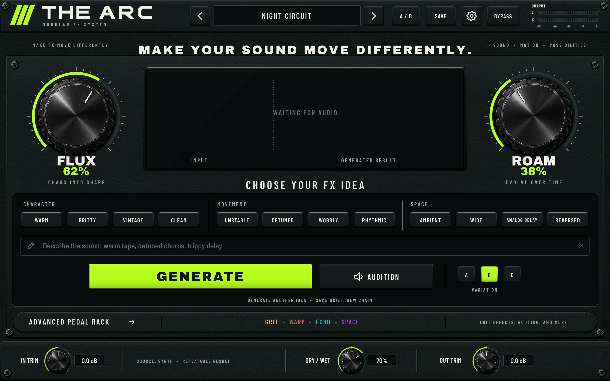
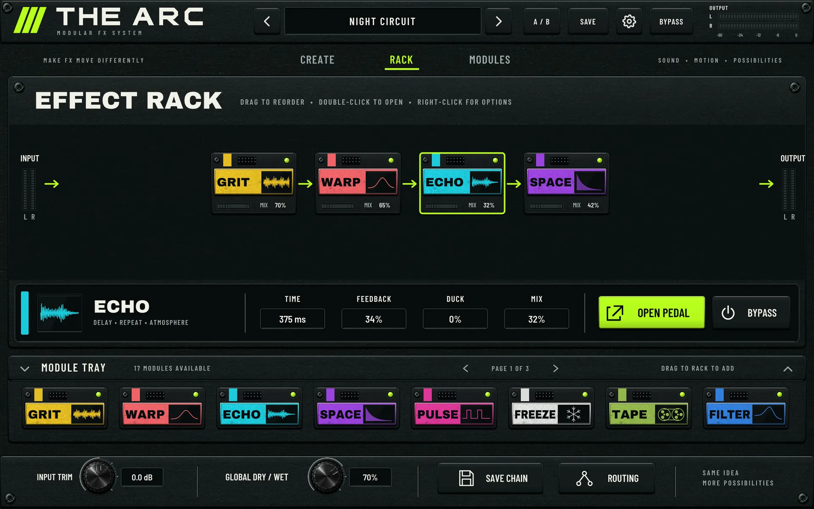
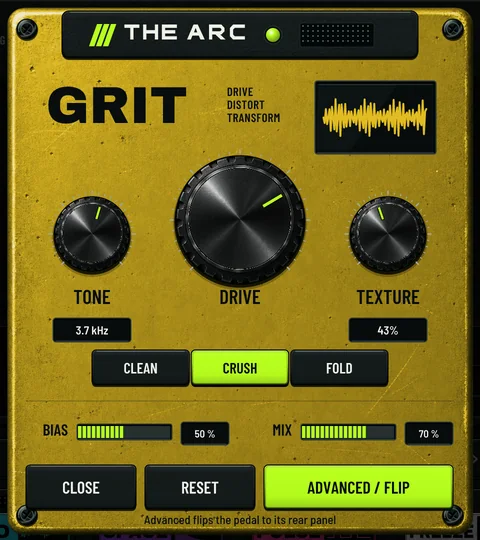
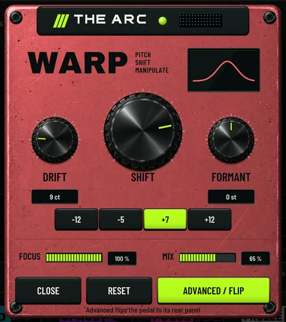
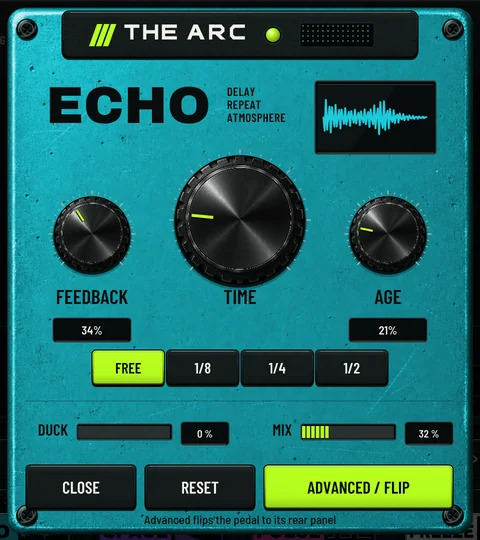
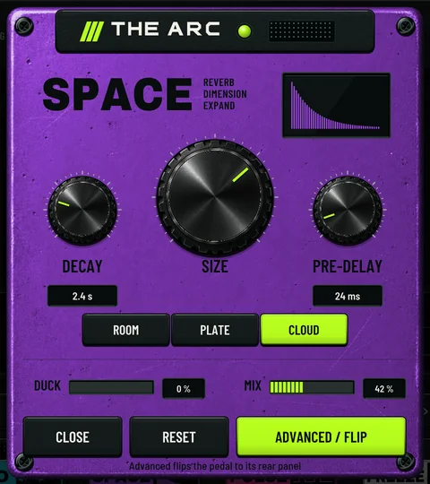

Quit using the sound exactly as you found it.
Arc Fx turns a sound that feels plain or too familiar into a part that belongs to your record. Stack and reorder effects to build new textures, add layers and movement, or change its character altogether. Make a quick change when the idea hits, then open the rack when you want to push it further.
Write a short brief or pick a few directions. Arc Fx turns them into an editable pedal chain.

Reorder, repeat, replace, or open any pedal. Seventeen modules wait in the tray.

Saturation into pitch behaves differently than pitch into saturation. Move the pedals and make the chain yours.




OutUse the working interface below. Move the macros, open a pedal, or flip it for the deeper controls.
Try Arc Fx ↓Name the change.
Get an editable chain.
Type a short direction or tap a few ideas. The same brief builds the same repeatable chain; A, B, and C explore different musical choices without changing the request.
The six results on this page come from the same Arc Fx compiler used by the interface. They are worked examples, not a hidden preset bank.
Seventeen ways to change the source.
Each effect opens on a simple front panel, then flips for filters, motion, width, pan, and the rest of its deeper controls.
Move the whole chain from two controls.
FLUX controls how far the chain pushes the source. ROAM controls how much the result evolves over time. The plugin view and the waves on this page follow both controls.
Choose how far the chain pulls the sound away from the source.
Choose how much the result shifts and develops while it plays.
Stack, reorder, repeat.
Use up to twelve slots in any order. Run the chain in series, split it into parallel lanes, or separate the mid and side.
What the engine actually does.
These details come from the plugin itself. When an effect adds timing or latency, it says so here.
Built for the input
Choose Drums, Bass, Synth, Keys, or Vocal so the chain responds to the sound you are actually feeding it.
A / B / C
Keep the chain and vary its musical dimensions. Header A/B compares two full settings separately.
.arc chain files
Save and load whole chains. Previous and next compile your current idea at neighbouring recipe seeds.
Reports 0 ms to your host
The dry path is undelayed. WARP's wet path adds about 1024 samples plus up to roughly 65 ms, and delay, reverse, granular and varispeed effects add their own setting-dependent timing.
60-second tail
The plugin declares a 60 s tail to your host. Held FREEZE material can ring longer.
Three window sizes
960 × 600, 1280 × 800 or 1600 × 1000, with undo and redo in Settings.